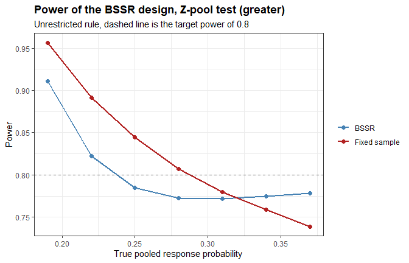

Overview
A trial with a binary endpoint needs an assumed response probability in each group before the first patient is enrolled. If the pooled response probability turns out to differ from what was assumed, the trial ends up either underpowered or larger than it needed to be. Blinded sample size re-estimation looks at the pooled number of responders partway through the trial and adjusts the remaining enrolment, without ever splitting the data by treatment group.
bbssr covers the whole chain of calculations that this requires, from the rejection region of a test to the enrolment decision at an interim analysis. Power, sample sizes and type I error rates are computed exactly rather than by simulation.
What is new since version 2.0.0
- Two tests of non-inferiority with a margin on the scale of the risk difference,
Test = 'Blackwelder'andTest = 'Farrington-Manning', and the blinded re-estimation of Friede, Mitchell and Mueller-Velten (2007). -
BinaryTypeIErrorBSSR()evaluates the type I error rate of a re-estimation design over the nuisance parameter,BinaryAlphaAdjBSSR()finds the adjusted significance level that controls it, andBinaryCondRejectBSSR()decomposes it by the interim outcome. -
BinaryGridBSSR()evaluates several designs, given as the rows of a data frame, over common scenarios. - The sample size can be re-estimated by the normal approximation (
ss.method), with another test or level (ss.Test,ss.alpha), with one of several rounding rules (rounding), within bounds on the final sample size (N.min,N.max), from given interim sample sizes (n.interim) and with an effect on the scale of the risk ratio or the odds ratio (effect). - Every function accepts
alternative = 'less', andref.pvalue = TRUErefines the maximization over the nuisance parameter of the unconditional tests. -
tsmethod = 'blaker'adds a third two-sided convention for the Fisher, Fisher mid-p and Boschloo tests, formula (2) of Mehrotra, Chan and Berger (2003). -
summary()ofBinaryPowerBSSR()reports the distribution of the final sample size.
See NEWS.md for the full list.
Installation
install.packages("bbssr")
# install.packages("devtools")
devtools::install_github("gosukehommaEX/bbssr")A C++ compiler is required to install from source.
The seven tests
Test |
Description | Exact level |
|---|---|---|
'Chisq' |
Pearson chi-squared, no continuity correction | no |
'Fisher' |
Fisher exact test, conditional on the total number of responders | yes |
'Fisher-midP' |
Mid-p variant of the Fisher exact test | no |
'Z-pool' |
Exact unconditional test, Z statistic with pooled variance | yes, up to the grid search |
'Boschloo' |
Exact unconditional test, Fisher p-value as ordering statistic | yes, up to the grid search |
'Blackwelder' |
Test of non-inferiority with the standard error at the observed proportions | no |
'Farrington-Manning' |
Test of non-inferiority with the standard error at the restricted maximum likelihood estimates | no |
The column “Exact level” refers to a fixed-sample design. The two unconditional tests maximize the null tail probability over a grid of the nuisance parameter, which can understate the exact p-value, and ref.pvalue = TRUE refines the maximum between the grid points. Without the Berger-Boos procedure the Boschloo p-value never exceeds the Fisher p-value, so the Boschloo test is at least as powerful as the Fisher test at every pair of response probabilities. The rejection regions, power and sample sizes of all seven tests are computed exactly.
Every test accepts alternative = 'greater', 'less' or 'two.sided'. For the conditional tests and the Boschloo test, tsmethod selects among the 'minlike' convention of stats::fisher.test, the 'central' convention that doubles the smaller tail, and the 'blaker' convention that orders the tables by the smaller of their two tail probabilities. A margin other than 0 requires 'Blackwelder' or 'Farrington-Manning' and a one-sided alternative.
Quick start
Power and sample size
library(bbssr)
BinaryPower(p1 = 0.6, p2 = 0.3, N1 = 40, N2 = 40, alpha = 0.025, Test = 'Fisher')
#> Exact power for a two-arm trial with a binary endpoint
#>
#> Test : Fisher
#> Alternative : greater
#> Sample sizes : N1 = 40, N2 = 40
#> Alpha : 0.025
#>
#> p1 p2 Power
#> 0.6 0.3 0.7248
BinarySampleSize(p1 = 0.6, p2 = 0.3, r = 1, alpha = 0.025, tar.power = 0.8,
Test = 'Fisher')
#> Sample size for a two-arm trial with a binary endpoint
#>
#> Test : Fisher
#> Alternative : greater
#> Response rates : p1 = 0.6, p2 = 0.3
#> Allocation ratio : 1 to 1
#> Alpha : 0.025
#> Target power : 0.8
#>
#> Required sample size: N1 = 48, N2 = 48, total N = 96
#> Attained power : 0.8005The exact power is not monotone in the sample size, because the set of attainable significance levels changes with every patient, so the search evaluates the exact power at each candidate rather than inverting a smooth approximation.
Rejection regions
RR <- BinaryRR(N1 = 10, N2 = 10, alpha = 0.025, Test = 'Boschloo')
RR
#> Rejection region for a two-arm trial with a binary endpoint
#>
#> Test : Boschloo
#> Alternative : greater
#> Sample sizes : N1 = 10, N2 = 10
#> Alpha : 0.025
#> Grid points : 100
#> Berger-Boos : not used
#> Refinement : not used
#>
#> Rejected outcomes: 23 of 121
#>
#> x2=0 x2=1 x2=2 x2=3 x2=4 x2=5 x2=6 x2=7 x2=8 x2=9 x2=10
#> x1=0 . . . . . . . . . . .
#> x1=1 . . . . . . . . . . .
#> x1=2 . . . . . . . . . . .
#> x1=3 . . . . . . . . . . .
#> x1=4 X . . . . . . . . . .
#> x1=5 X . . . . . . . . . .
#> x1=6 X X . . . . . . . . .
#> x1=7 X X X . . . . . . . .
#> x1=8 X X X X . . . . . . .
#> x1=9 X X X X X . . . . . .
#> x1=10 X X X X X X X . . . .
#>
#> X marks rejection of the null hypothesisThe whole grid of p-values is computed in one pass and kept for the rest of the session, so a power curve costs little more than a single p-value.
Evaluating a re-estimation design
plan <- BinarySampleSize(p1 = 0.45, p2 = 0.09, r = 1, alpha = 0.025, tar.power = 0.8,
Test = 'Z-pool')
res <- BinaryPowerBSSR(
p = seq(0.19, 0.37, by = 0.03), Delta.A = 0.36, Delta.T = 0.36,
N1 = plan$N1, N2 = plan$N2, omega = 0.5, r = 1,
alpha = 0.025, tar.power = 0.8, Test = 'Z-pool'
)
res
#> Blinded sample size re-estimation for a binary endpoint
#>
#> Test : Z-pool
#> Alternative : greater
#> Design rule : unrestricted
#> Initial size : N1 = 24, N2 = 24
#> Interim fraction: 0.5, giving n1 = 12 and n2 = 12
#> Treatment effect: assumed 0.36, true 0.36 (risk difference)
#> Re-estimation : exact power of Z-pool at level 0.025
#> Alpha : 0.025, target power 0.8
#>
#> p p1 p2 power.BSSR power.TRAD E.N
#> 0.19 0.37 0.01 0.9107 0.9565 38.2
#> 0.22 0.40 0.04 0.8221 0.8916 40.6
#> 0.25 0.43 0.07 0.7848 0.8442 43.5
#> 0.28 0.46 0.10 0.7727 0.8070 46.6
#> 0.31 0.49 0.13 0.7718 0.7800 49.4
#> 0.34 0.52 0.16 0.7747 0.7590 51.9
#> 0.37 0.55 0.19 0.7783 0.7388 53.9
plot(res)
The variance of a binary endpoint is largest at one half, so at a fixed risk difference the required sample size grows as the pooled probability approaches that value. The fixed-sample design of 48 patients is planned at a pooled probability of 0.27. The re-estimation adapts the sample size to the pooled probability observed at the interim analysis, and E.N reports the expected total sample size it leads to.
Type I error rate and adjusted level
tie <- BinaryTypeIErrorBSSR(
Delta.A = 0.3, N1 = 39, N2 = 39, n.interim = c(20, 20), r = 1,
alpha = 0.025, tar.power = 0.8, Test = 'Chisq', ss.method = 'standard'
)
tie
#> Type I error rate of blinded sample size re-estimation for a binary endpoint
#>
#> Test : Chisq
#> Alternative : greater
#> Initial size : N1 = 39, N2 = 39
#> Interim size : n1 = 20, n2 = 20
#> Assumed effect : 0.3 (RD)
#> Nominal level : 0.025
#> Grid : 199 values of theta in [0.005, 0.995], maxima refined
#>
#> Largest type I error rate
#> Design theta TIE
#> BSSR 0.5623150 0.02729
#> Fixed sample 0.0935671 0.02938
BinaryAlphaAdjBSSR(
Delta.A = 0.3, N1 = 39, N2 = 39, n.interim = c(20, 20), r = 1,
alpha = 0.025, tar.power = 0.8, Test = 'Chisq', ss.method = 'standard'
)
#> Adjusted significance level for blinded sample size re-estimation
#>
#> Test : Chisq
#> Alternative : greater
#> Adjusted part : final analysis only
#> Target level : 0.025
#>
#> Design max.TIE alpha.adj max.TIE.adj
#> BSSR 0.0272864 0.0204376 0.0237418
#> Fixed sample 0.0293761 0.0207700 0.0247660The type I error rate is computed exactly over the common response probability, and the adjusted level is the largest nominal level at which its maximum does not exceed the target level.
Comparing designs
design <- expand.grid(Test = c('Chisq', 'Fisher'), omega = c(0.3, 0.5),
stringsAsFactors = FALSE)
grid <- BinaryGridBSSR(design, p = c(0.3, 0.4, 0.5), Delta.A = 0.3, N1 = 30, N2 = 30,
r = 1, alpha = 0.025, tar.power = 0.8, ss.method = 'standard')
summary(grid)
#> design Test omega N1 N2 n1.interim n2.interim Delta.T power.BSSR.min
#> 1 1 Chisq 0.3 30 30 9 9 0.3 0.7716927
#> 2 2 Fisher 0.3 30 30 9 9 0.3 0.6913132
#> 3 3 Chisq 0.5 30 30 15 15 0.3 0.7885735
#> 4 4 Fisher 0.5 30 30 15 15 0.3 0.7026320
#> power.BSSR.max power.TRAD.min power.TRAD.max E.N.max
#> 1 0.7932220 0.6617280 0.7369757 81.24550
#> 2 0.7225466 0.5593173 0.6447901 81.24550
#> 3 0.7982702 0.6617280 0.7369757 83.27159
#> 4 0.7265063 0.5593173 0.6447901 83.27159Re-estimating from observed interim data
BinaryBSSR(n1 = 12, n2 = 12, S = 8, Delta.A = 0.36, r = 1,
alpha = 0.025, tar.power = 0.8, Test = 'Z-pool')
#> Blinded sample size re-estimation from interim data
#>
#> Test : Z-pool
#> Alternative : greater
#> Design rule : unrestricted
#> Assumed effect : 0.36
#> Alpha : 0.025, target power 0.8
#>
#> Interim data
#> Patients : n1 = 12, n2 = 12, total n = 24
#> Responders : S = 8, blinded pooled rate = 0.3333
#> Recovered rates : hat.p1 = 0.5133, hat.p2 = 0.1533
#>
#> Re-estimation
#> Required total : N1 = 27, N2 = 27, total N = 54
#> Still to enrol : group 1 = 15, group 2 = 15, total = 30
#> Final size : N1 = 27, N2 = 27, total N = 54
#> Power at final N : 0.8129The total number of responders is the only quantity that has to leave the database, so the analysis stays blinded.
Functions
| Function | Purpose |
|---|---|
BinaryRR() |
Rejection region of a test over the outcome grid |
BinaryPower() |
Exact power at a given sample size |
BinarySampleSize() |
Sample size attaining a target power |
BinaryPowerBSSR() |
Power and distribution of the final sample size of a re-estimation design |
BinaryGridBSSR() |
Power and final sample size of several re-estimation designs |
BinaryTypeIErrorBSSR() |
Type I error rate of a re-estimation design |
BinaryAlphaAdjBSSR() |
Adjusted significance level that controls the type I error rate |
BinaryCondRejectBSSR() |
Conditional rejection probabilities and the type I error rate by interim outcome |
BinaryBSSR() |
Sample size re-estimation from observed interim data |
Each returns a classed object with a print(), summary() or plot() method where one is useful.
Design rules
Under the unrestricted rule (restricted = FALSE) the re-estimated sample size is used as it stands, so the trial may end up smaller than planned. Under the restricted rule (restricted = TRUE) the planned sample size acts as a floor, so the trial can only grow. N.min and N.max add a lower and an upper bound on the final total sample size.
Documentation
The vignettes are available with vignette(package = "bbssr") and on the package website.
-
bbssr-introduction: the whole package in one pass -
bbssr-interim-reestimation: one trial from planning to the interim decision -
bbssr-reestimation-rules: the options of the re-estimation -
bbssr-design-grid: comparing designs withBinaryGridBSSR() -
bbssr-non-inferiority: tests with a margin and re-estimation in non-inferiority trials -
bbssr-type1-error: type I error rate, adjusted level and conditional rejection probabilities -
bbssr-statistical-methods: the tests and the re-estimation -
bbssr-validation: comparisons with other packages and with published results
Validation
The Fisher exact test reproduces stats::fisher.test to machine precision, and its 'blaker' convention reproduces exact2x2. The unconditional tests reproduce a direct evaluation of their definition, and agree with Exact and exact2x2 up to the difference in the search over the nuisance parameter. The script inst/reproduce/reproduce-published.R recomputes the published results of Berger and Boos (1994), Blackwelder (1982), Boschloo (1970), Farrington and Manning (1990), Fay and Hunsberger (2021), Friede and Kieser (2004), Friede, Mitchell and Mueller-Velten (2007), Kieser (2020) and Mehrotra, Chan and Berger (2003), and the unit tests compare the package with independent implementations. Details are in the validation vignette.
References
The methods implemented in the package are described in the following works.
Berger, R. L. and Boos, D. D. (1994). P values maximized over a confidence set for the nuisance parameter. Journal of the American Statistical Association, 89, 1012-1016.
Blackwelder, W. C. (1982). “Proving the null hypothesis” in clinical trials. Controlled Clinical Trials, 3, 345-353.
Boschloo, R. D. (1970). Raised conditional level of significance for the 2 × 2-table when testing the equality of two probabilities. Statistica Neerlandica, 24, 1-9.
Farrington, C. P. and Manning, G. (1990). Test statistics and sample size formulae for comparative binomial trials with null hypothesis of non-zero risk difference or non-unity relative risk. Statistics in Medicine, 9, 1447-1454.
Fay, M. P. and Hunsberger, S. A. (2021). Practical valid inferences for the two-sample binomial problem. Statistics Surveys, 15, 72-110.
Friede, T. and Kieser, M. (2004). Sample size recalculation for binary data in internal pilot study designs. Pharmaceutical Statistics, 3, 269-279.
Friede, T., Mitchell, C. and Mueller-Velten, G. (2007). Blinded sample size reestimation in non-inferiority trials with binary endpoints. Biometrical Journal, 49, 903-916.
Kieser, M. (2020). Methods and Applications of Sample Size Calculation and Recalculation in Clinical Trials. Springer.
Kieser, M. and Friede, T. (2000). Re-calculating the sample size in internal pilot study designs with control of the type I error rate. Statistics in Medicine, 19, 901-911.
Mehrotra, D. V., Chan, I. S. F. and Berger, R. L. (2003). A cautionary note on exact unconditional inference for a difference between two independent binomial proportions. Biometrics, 59, 441-450.
License
MIT, see LICENSE.md.